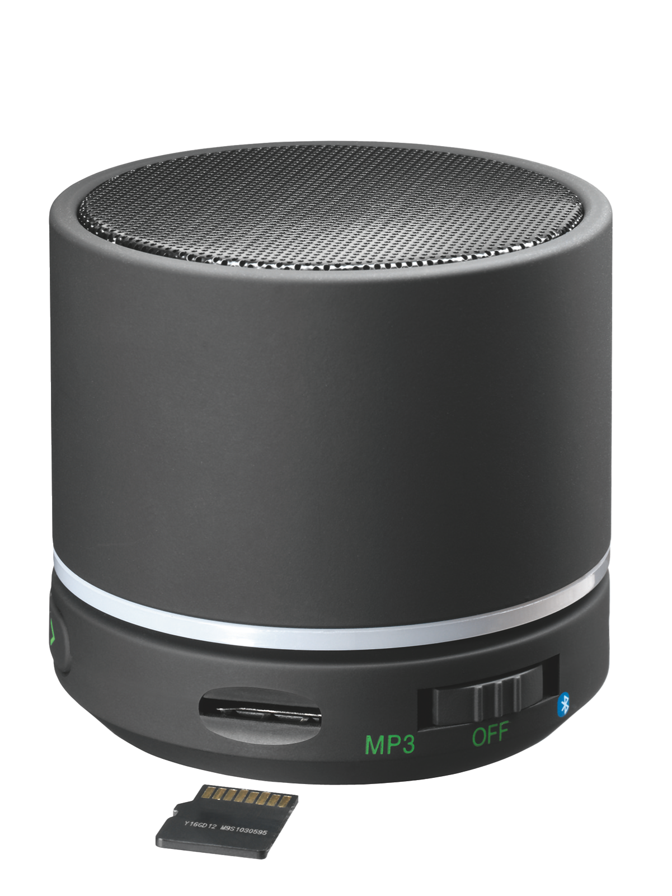
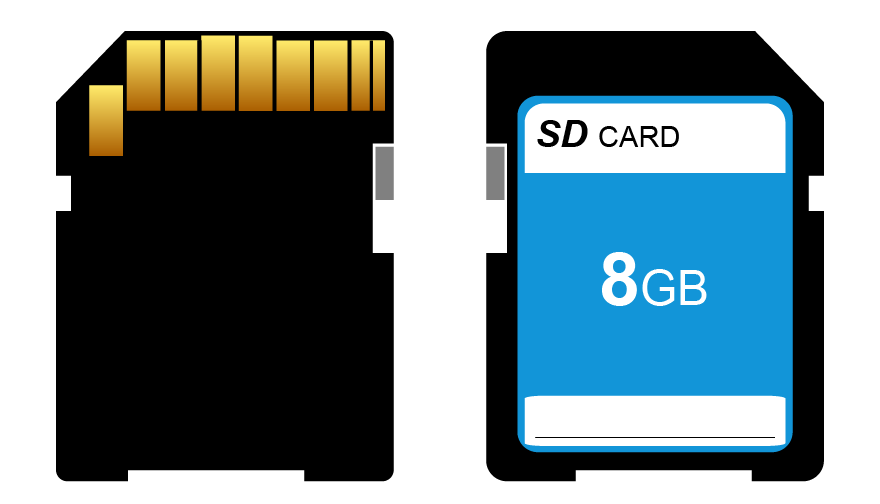
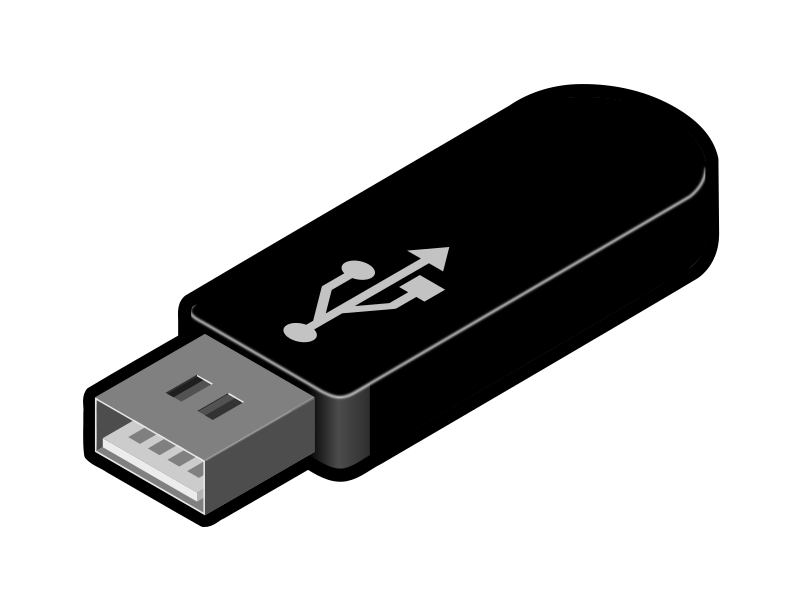
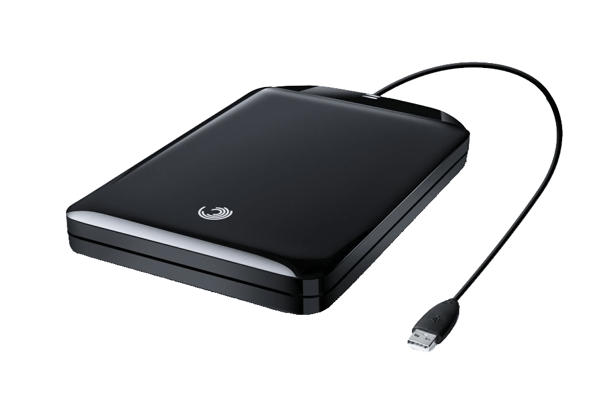

Posteadas
Computadora, laptop, audifonos bluetooth, reloj inteligente, smartwatch, mouse, relojes, bocinas... y mas. Un post por cada uno.

Son un complemento Informatico que respalda y conserva la memoria de los dispositivos (en caso de Ordenadores el Disco Duro) con menos uso alargando asi la vida util y evitando lentitud en las tareas. Son pequeños y portatiles; primero, nunca esta de mas respaldar nuestros archivos e informacion; segundo, accesibilidad rapida, por ejemplo, muchos tramites habituales se puede agilizar traeyendo datos y documentos siempre a la mano, disponibles rapidamente y sin necesidad de conexion; las unidades de almacenamiento externas estan apegadas estandares universales para conexion por puertos o entradas, por lo que no se dificultara o limitara su uso; Las imagenes y videos cada vez son mas nitidos y de mejor resolucion y calidad de audio, para esos estandares actuales se debe tener mucha memoria.
Hay que estar consientes que esa facil accesibilidad offline, puede ser un problema de seguridad si no se toma ninguna medida y se almacenan archivos con informacion sensible, pues estos dispositivos son pug & play, significa que no requieren configuracion ni contraseña, se conecta y se ve el contenido; existen alternativas para este problema de seguridad, como el programa winrar, donde se pueden comprimir o almacenar un grupo de archivos almacenados en una misma carpeta en un archivo extension *.zip o *.rar, esa carpeta comprimida puede estar protegida por contraseña; al tener informacion sensible o no, tambien hay que considerar el hecho de que son sensibles fisicamente, hay que ser muy cuidadosos con ellas, pues si se caen o se maltratan pueden dañarse y dejar de ser leidos por cualquier dispositivo y la informacion perderse.
Independientemente de usar servicios en la nube, puede ser buena idea tener un respaldo offline pues estos servicios son suceptibles a fallos o puede haber complicaciones para acceder a la informacion si hay problemas de conexion. Ademas otra ventaja es la posibilidad de portar y compartir ejecutables o programas y otro tipo de archivos que la nube, por seguridad no te permite almacenar mucho menos compartir. En resumen los dispositivos de almacenamiento son un buen complemento y auxiliares para respaldar y agilizar acceso a todo tipo de archivos, los dispositivo de almacenamiento masivos pueden ser USB, SD con su adaptador, y bancos de datos o discos duros, mas profesionales, es decir, mas durabilidad y capacidad.
Todos deberiamos usar una, por su diseño puede "integrarse" al dispositivo y pasar desapercibida totalmente; su presentacion de targeta miniatura la vuelve compacta y simple; buena inversion, pues su valor es bajo y lo que ofrecen es muy valioso, respaldo de la informacion, cuidado y eficiencia de nuestro computador, celular o tablet, ademas de que podemos guardar muchisimo mas.
Comparado con un SD puede calificar como accesorio informatico, tan es asi que los fabricantes les ponen diseños diferentes y detalles esteticos y ergonomicos, estampados, variedad de colores, formas y materiales. La SD es fragil, pero el hecho de incrustarse en el dispositivo y no tener necesidad de moverse la conseva mejor, cosa que no pasa con una USB que puede ser mas suceptible a caidas, golpes o extravios por lo que se debe ser especialmente cuidadoso con ellas. Son economicos y pueden ser una inversion util, pues se pueden portar TODO tipo de archivos de facil acceso.
Son unos cuadros mucho mas grandes que una USB, pues estan pensados para un uso mas profesional; mas duraderos y mayor capacidad. Su proposito esta mucho mas enfocado en el respaldo y almacenamiento de archivos pesados, pues No es pequeño y facil de transportar en un bolsillo o como llavero como si lo es una USB.
La profeco dio a conocer, por medio de su Gaceta, las mejores marcas de memorias USB y Discos Duros Externos luego de someter 20 elementos, de diversas marcas a diferentes pruebas de calidad.
Es importante decir que lo siguiente fue una lista para fanaticos de la tecnologia pues es dificil memorizar y ver los modelos de los dispositivos que compramos y puede ser hasta muy complicado hayarlos por el nombre del modelo en comercios establecidos; destaca y considera las marcas y la capacidad. Lo siguiente fue recopilado de la Gaceta publicada por la Profeco.
Computadora, laptop, audifonos bluetooth, reloj inteligente, smartwatch, mouse, relojes, bocinas... y mas. Un post por cada uno.